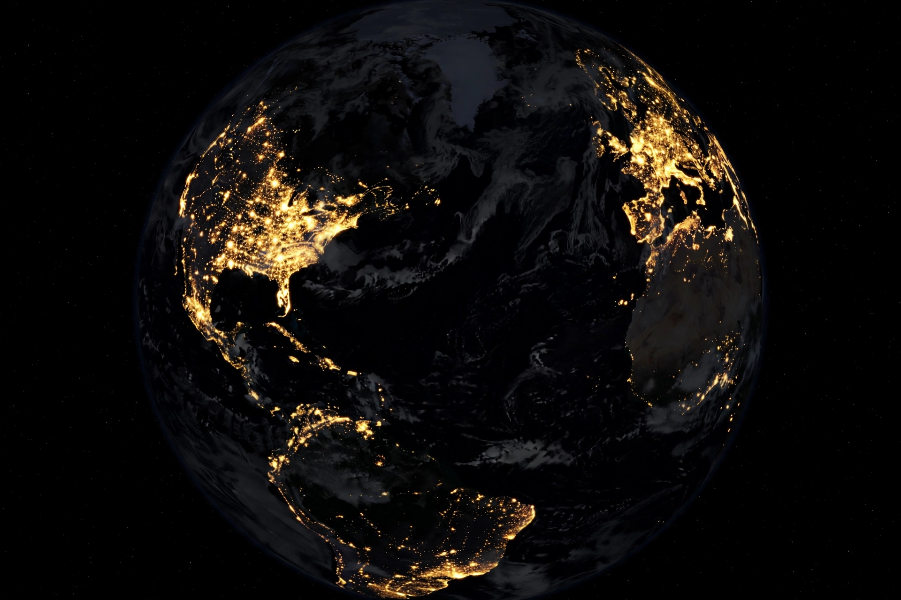

From Wikipedia, the free encyclopedia
| Anthropocene | |
 Human activity now shapes planetary systems, the premise of the Anthropocene concept | |
| Term coined/popularised | Eugene F. Stoermer; Paul J. Crutzen (2000) |
| Meaning | Proposed geological epoch dominated by human impact |
| Preceded by | Holocene (formally current epoch) |
| Proposed start dates | 1610; late 18th century; c. 1950 ("Great Acceleration") |
| Status | Not formalised: a 2024 vote rejected epoch status; widely used informally |
The Anthropocene is a proposed geological epoch dating from the commencement of significant human impact on Earth's geology and ecosystems, including, but not limited to, anthropogenic climate change. The term was used informally by limnologist Eugene F. Stoermer in the 1980s and popularised in 2000 by atmospheric chemist and Nobel laureate Paul J. Crutzen, who considered the influence of human behaviour on Earth's atmosphere in recent centuries so significant as to constitute a new geological epoch.
Evidence of a planetary-scale human signal includes rising concentrations of greenhouse gases (carbon dioxide and methane) in ice cores, widespread deposits of plastics, concrete, fly ash, black carbon and nitrogen fertilisers, elevated extinction and species-translocation rates, and artificial radionuclides from mid-20th-century nuclear weapons testing preserved in sediments and ice. Human-made ("technosphere") material has been estimated to exceed the mass of all living biomass. The mid-20th century shows a sharp synchronised inflection in many indicators — population, energy use, fertiliser consumption, damming and pollution — termed the "Great Acceleration".
Debated start dates include the spread of agriculture thousands of years ago; the 1610 dip in atmospheric CO2 (the "Orbis spike") associated with reforestation of the Americas after the Columbian exchange and pandemic-driven population collapse; the Industrial Revolution (Crutzen suggested the late 18th century, linking it to James Watt's steam engine of 1784); and c. 1950, favoured by the Anthropocene Working Group (AWG) because of the global radionuclide signal and Great Acceleration. In 2023 the AWG proposed Crawford Lake in Ontario, Canada — whose annually layered sediments record plutonium fallout — as the candidate "golden spike" (GSSP) site, with a start date of 1950.
In March 2024, the Subcommission on Quaternary Stratigraphy voted against formalising the Anthropocene as an epoch, a decision upheld by the International Commission on Stratigraphy and the IUGS; the Holocene therefore remains the formally current epoch. Critics of formalisation argued that the Anthropocene is better treated as a geological "event" rather than an epoch, or that its proposed signal is too recent and locally variable. Despite the vote, the term remains in wide use across the sciences and humanities as an informal concept for the age of dominant human influence on the Earth system. Debate also continues over the name itself — alternatives such as "Capitalocene" emphasise economic systems rather than humanity as a whole.